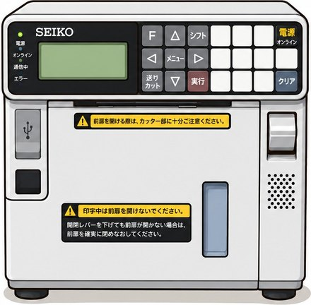
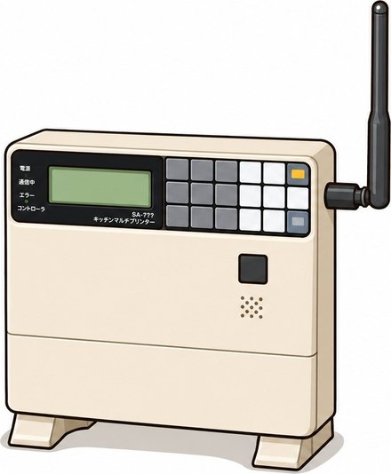

← ツールに戻る
OES入替作業APP 操作マニュアル
Googleカレンダー 一括登録ツール ／ パソコン・スマートフォン対応
1. このツールでできること
- 質問に答える形で、①業態と稼働件数を選ぶ → ②件数ぶんの日付と時間帯を選ぶ → ③店舗名と住所を入力するだけで、
予定をまとめて作れます。同じ日に何件でも、1件目は10/1・2件目は10/10のように別々の日でもかまいません。
- 業態ごとの定型文（説明文のひな形）を設定画面で自由に編集できます。
- 設定はサーバー上の1つのファイルで全員が共有します。管理者が直せば、全員の画面に同じ内容が反映されます。
- 作った予定は、Googleカレンダーに1件ずつ順番に登録するか、ICSファイルで一括取込できます。
- 作業当日は、ご自分のGoogleカレンダーの説明文をコピーして貼り付けるだけで、
「入店連絡 / 中間報告 / 退店連絡」に自動で振り分けられ、ワンタップでコピーできます。
隣の「Chat」ボタンでその業態・店舗のGoogle Chatを直接開けるので、一覧から毎回探す手間がありません。
- 対応するブラウザでは、設定画面からその場でアプリとしてインストールできます。
- パソコンでもスマートフォンでも同じように操作できます。
このアプリは、会社の複数人で使うことを前提にしています。
業態・定型文・よく使う文などの設定は全員が同じ内容を使います（サーバー上の1ファイルで共有）。
設定を変更できるのは管理者だけで、変更には管理者パスワードが必要です（8章）。
作業当日は、それぞれが自分のGoogleカレンダーの説明文を貼り付けて作業を進めます。
このツールは予定を「作る」ためのものです。予定そのものはGoogleカレンダー側に保存されます。ツールの登録リストは、ブラウザを閉じると消えます。
対象機器（参考）

マルチプリンター（SEIKO）
「カレンダー」画面の①カードのタイトル横に表示しています

マルチステーション
「作業当日」画面のタイトル横に表示しています
2. 画面の構成
| タブ | 内容 |
|---|
| 📅 カレンダー | ①業態と稼働件数を選ぶ → ②日付と時間帯を選ぶ → ③店舗名と住所を入力 →
④一覧で確認してGoogleカレンダーへ登録、の4ステップの質問形式でこの1画面が完結します。タブの数字は現在登録リストにある件数です。 |
| 🛠️ 作業当日 | ご自分のGoogleカレンダーの説明文を貼り付けると、入店・中間報告・退店の連絡文に自動で振り分けられます。コピーして Google Chat に貼り付けます。 |
| ⚙️ 設定 | 業態・時間帯・定型文（並び替え可）、よく使う文、業態・店舗ごとのGoogle Chat URLなどを編集します。
変更には管理者パスワードが必要で、内容はサーバー上の共有ファイルで全員が同じものを使います。
使用頻度の低い項目は「詳細設定」にまとまっています。アプリのインストールもここから行えます。 |
2-2. ホーム画面に追加する（アプリのように使う）
このツールはホーム画面に追加でき、アイコンをタップするだけでアプリのように起動できます（PWA対応）。ブラウザのアドレス欄を毎回開く必要がなくなります。
アプリ内のボタンから（対応ブラウザのみ）
- 「⚙️ 設定」タブの一番下にある「📱 アプリとしてインストール」カードを開きます。
- ボタンが表示されていれば、それを押すだけでインストールできます（Android版Chrome・Edgeなど対応ブラウザのみ）。
ボタンが表示されない場合（iPhoneのSafariなど）は、そのブラウザが自動インストールに対応していません。下の手動手順をお使いください。
スマートフォン（Android・Chrome）
- Chromeでこのページを開きます。
- 右上の「⋮」（メニュー）を開き、「アプリをインストール」または「ホーム画面に追加」をタップします。
- 表示された名前のまま「インストール」をタップします。
スマートフォン（iPhone・Safari）
- Safariでこのページを開きます。
- 下部（または上部）の共有アイコン □↑ をタップします。
- 「ホーム画面に追加」を選び、「追加」をタップします。
パソコン（Chrome・Edge）
- アドレスバー右側のインストールアイコン（表示されていれば）、またはメニューの「アプリをインストール」を選びます。
アイコンは、マルチプリンターの写真に「OES」の青いバッジを重ねたものです。インストール後もタブ名・アイコンは「OES入替作業APP」のまま変わりません。
アイコンに小さなChromeのマークが付いてしまうとき（Android）
ホーム画面のアイコンの右下に小さなChromeのマークが重なっている場合、それは「独立したアプリ」ではなく、
「ただのインターネットのショートカット」として追加された状態です。動作はしますが、正しい状態ではありません。
独立したアプリとして追加するには、サーバー側に次のファイルが揃っていて、https:// で開いている必要があります。
manifest.webmanifest（アプリ名やアイコンの情報）sw.js（オフライン対応のファイル）assets/icon-192.png / assets/icon-512.png / assets/icon-512-maskable.png
- 上のファイルが
index.html と同じ場所にアップロードされているか確認します。
- ホーム画面の今のアイコンを長押しして削除します。
- Chromeでもう一度ページを開き、「⋮」→「アプリをインストール」を選び直します。
メニューに「アプリをインストール」ではなく「ホーム画面に追加」しか出ない場合は、まだショートカットしか作れない状態です。上のファイルの配置と https:// での表示をご確認ください。
アプリとして開いても機能は通常のブラウザ表示と同じです。設定はサーバー上の共有ファイルから読み込むため、インストールしても内容は全員と同じです。
3. 基本の使い方（4ステップの質問形式）
- ①業態と稼働件数を選ぶ
「📅 カレンダー」タブの一番上で、業態と稼働件数（その業態で何件まわるか、1〜30件から選ぶ）を選びます。
下に、その業態の午前・午後それぞれの時刻が参考として表示されます。
（この画面に担当者を選ぶ欄はありません。）
- ②日付と時間帯を選ぶ
①で選んだ件数ぶんの行が並ぶので、各行で日付と午前 (AM) ／ 午後 (PM)を選びます（既定は午前）。
同じ日に何件でも、別々の日でもかまいません。
例：1件目は10/1の午前、2件目は10/1の午後、3件目は10/10の午前、というような組み合わせもできます。
- ③店舗名と住所を入力する
②と同じ件数の行が並び、各行の見出しに②で選んだ日付・時間帯が表示されます（例：「1件目 10/1(木) 午前 08:30〜09:30」）。
それを見ながら、その件の店舗名と住所（任意）を入力します。
入力できたら「このN件を登録リストへ」を押します。②で日付を選んだ行だけが登録リストに追加されます
（日付が未選択の行はスキップされます）。
登録が終わると、②③の入力は次のために空になります（件数はそのまま）。
- ④一覧で確認してGoogleカレンダーへ登録する
画面下の一覧に、作った予定がカードとして並びます（既定は折りたたみ表示。タップすると開いて内容を編集できます）。
内容を確認したら、Googleカレンダーへ登録します（次の章）。
別の業態を続けて登録したいときは、①に戻って業態・件数を選び直し、②③にまた入力します。
例：「はま寿司で、10/1の午前に大宮店、10/10の午後に川口店をまわる」→
①で業態「はま寿司」・稼働件数「2件」を選ぶ → ②で1件目に「10/1・午前」、2件目に「10/10・午後」を選ぶ →
③で1件目に「大宮」、2件目に「川口」と入力して「この2件を登録リストへ」。これで2件が一覧に作られます。
4. Googleカレンダーへの登録方法（2通り）
A. Googleカレンダーで順番に登録（おすすめ・確認しながら）
- 「📅 カレンダー」タブの「④一覧で確認してGoogleカレンダーへ登録」カードにある「Googleカレンダーで順番に登録」を押します。
- 1件目の内容が表示されるので「開く」を押します。Googleカレンダーの予定作成画面が新しいタブで開きます。
- 内容を確認して、Googleカレンダー側で「保存」を押します。
- このツールの画面に戻り、続けて「開く」を押して次の予定へ進みます。
ブラウザのポップアップブロックを避けるため、1件ずつボタンを押して開く方式にしています。「とばす」でその予定を飛ばせます。
B. ICSファイルで一括取込（件数が多いとき）
- 「📅 カレンダー」タブの「④一覧で確認してGoogleカレンダーへ登録」カードにある「ICSファイルで一括取込」を押すと、
oes-日付.ics がダウンロードされます。
- パソコンのブラウザでGoogleカレンダーを開き、右上の歯車 → 設定 → インポート／エクスポートを開きます。
- ダウンロードした ICS ファイルを選び、追加先のカレンダーを選んで「インポート」を押します。
- 件数が表示されれば完了です。
インポートは1件ずつの確認なしでまとめて登録されます。取り込む前に登録リストの内容をよく確認してください。時刻は日本時間（Asia/Tokyo）で書き出されます。
5. 一覧で確認してGoogleカレンダーへ登録（登録リスト）
各カードは既定で折りたたまれています。見出し（番号・日付・時刻・業態・店舗名の要約）をタップすると開き、
内容を1件ずつ編集できます。見出しの「登録」ボタンからは、開かなくてもその場でGoogleカレンダーに登録できます。
- 各カードを開くと、日付・業態・時間帯・開始／終了時刻・店舗名・住所・説明文を1件ずつ変更できます。
- 業態や時間帯を変えると、時刻と説明文がその設定の内容に入れ替わります。
- 店舗名は、入力欄から離れたときに末尾へ自動で「店」が付きます（例：渋谷 → 渋谷店）。設定で変更・停止できます。
- 住所はGoogleカレンダーの「場所」に入ります。
- 説明文は定型文から自動生成されます（「定型文から自動生成」の表示）。手で書き換えると「手動で編集」に変わり、以後は自動更新されません。「定型文に戻す」で元に戻せます。
- 複製：同じ内容の予定をもう1件作ります。削除：その予定だけ消します。全て削除：リストを空にします。
- ＋ 空の行を追加：カレンダーを使わずに1件だけ手入力したいときに使います。
5-2. 作業当日：連絡文をコピーして Google Chat へ
作業当日は「🛠️ 作業当日」タブを使います。その日の予定を読み込むと、説明文が
①入店連絡 ／ ②中間報告 ／ ③退店連絡 の3つに自動で振り分けられ、それぞれ「コピー」ボタンが付きます。
使い方は「コピーして貼り付けるだけ」
ご自分のGoogleカレンダーに登録した説明文を貼り付けるだけで使えます。準備や設定は何も要りません。
- ご自分のGoogleカレンダー（アプリでもブラウザでも可）で、今日の予定を開きます。
- 予定の説明文をコピーします（長押し／ドラッグで選択してコピー）。
- このアプリの「🛠️ 作業当日」タブを開き、貼り付け欄に貼り付けて、
幅いっぱいの青いボタン「貼り付けた内容で連絡文を作る」を押します。
これだけで ①入店連絡 ／ ②中間報告 ／ ③退店連絡 に自動で振り分けられ、
それぞれ「コピー」ボタンでワンタップでコピーできます。「今日の作業」に業態・店舗名・時刻も表示されます。
このアプリのカレンダー画面で当日分を作ってある場合は、「このアプリの登録リストから探す」から呼び出すこともできます
（候補が複数あるときは一覧から選びます）。
Google Chat への送り方
- 入店したら ①入店連絡 の「コピー」を押します。
- 隣の「Chat」ボタンを押すと、その業態・店舗のGoogle Chatが新しいタブで開きます。貼り付けて送信します。
- 中間報告・退店時も同じように ② ③ の「コピー」→「Chat」の順に押して送信します。
文面はその場で直接書き換えられます。書き換えたあと元に戻したいときは「定型文から作り直す」を押してください。
業態・店舗のGoogle Chatをワンタップで開く（一覧から毎回探さなくてよい）
「Chat」ボタンは、その作業の業態・店舗名に対応するGoogle ChatのURLがあらかじめ登録されていれば、それを直接開きます。
登録が無い場合は、案内などは出さずにそのまま一般のGoogle Chat（ルーム一覧の画面）を開きます。
- あらかじめ「⚙️ 設定」の「詳細設定」内「業態・店舗ごとのGoogle Chat URL」で、よく使う業態・店舗のURLを登録しておきます（次の章）。
- 作業当日タブで予定を読み込み、「Chat」ボタンを押します。
- 登録済みの業態・店舗であれば、その専用のChatが直接開きます。未登録であれば一般のGoogle Chatが開くので、
そこから該当のルームを開いてください。
業態名や店舗名の表記が違う（例：「渋谷駅前店」と「渋谷店」）と別の登録として扱われ、URLが見つかりません。
「⚙️ 設定」の登録内容と、実際に使う業態名・店舗名の表記を揃えてください。
退店時の機器台数を入力する
③退店連絡の上に、MPR・MST・HT・BC・BP の5つの数量プルダウン（1〜10）があります。
選んだ機器だけが、③のコピー文の一番下にまとめて追記されます（例: MPR 2台）。
- 選んでいない機器はコピー文に出てきません。使っていない機器を毎回「-」に戻す必要はなく、使った分だけ数を選んでください。
- 選ぶ順番は自由です。コピー文には常に
MPR → MST → HT → BC → BP の順で並びます。
- 単位はBPだけ「個」、それ以外は「台」です。
- 「-」（空欄）に戻すと、その機器の行だけコピー文から消えます。
- 別の作業を読み込み直すと、5つのプルダウンは自動で「-」に戻ります。「定型文から作り直す」を押した場合は、選択済みの数はそのまま残ります。
よく使う文（押すだけでコピー）
画面の下に、「お疲れ様です」「ご確認よろしくお願いします」などの短い文がボタンで並んでいます。
押すだけでコピーされるので、入力せずにそのまま Google Chat へ貼り付けられます。
- 文の追加・修正・削除・並び替えは、右の「編集」から「⚙️ 設定」→「よく使う文（定型フレーズ）」で行います。
- 差し込み文字（
{業態} {店舗名} {開始} など）を入れておくと、読み込み中の作業の内容に置き換わります。
例: {業態} {店舗名} の作業が完了しました → すき家 渋谷店 の作業が完了しました
- 予定を読み込んでいなくても使えます。
Google Chat への自動送信は行いません。コピー → 貼り付け → 送信の手動操作です。送信前に内容を確認できるので、誤送信の心配がありません。
振り分けのしくみ
説明文を空行で区切られたかたまりに分け、「中間報告」と「退店報告」という言葉を目印に振り分けます。
- 「中間報告」より前 → ①入店連絡（POSレジの行なども含みます）
- 「中間報告」のかたまり → ②中間報告
- 「退店報告」から後ろ全部 → ③退店連絡（入店・退店時刻、MPR等の台数を含みます）
定型文を書き換えて別の言い方にしている場合は、「⚙️ 設定」の「詳細設定」を開いて「作業当日の連絡文の目印」を変更してください。目印が見つからないときは、全文が①に入ります（そのまま手で直せます）。
Googleカレンダーからの自動読み込みについて
Googleカレンダーの予定を直接読み込む機能は、現在は使っていません。
利用者ごとにカレンダーが異なり、全員で同じ設定を共有する仕組みと合わないためです。
上記のとおり、説明文をコピーして貼り付ける方法をお使いください（準備不要で、どなたのカレンダーでも同じように使えます）。
将来また使う場合に備えて、設定項目だけは「⚙️ 設定」→「詳細設定」に残してあります。
6. 設定：業態ごとの定型文と時間帯
「⚙️ 設定」タブでは、業態ごとに時間帯と定型文を登録します。業態名をタップすると内容が開きます。
設定タブは見やすさのため、使用頻度の低い項目を「詳細設定」1か所にまとめています（下記参照）。
業態の項目
| 項目 | 説明 |
|---|
| 業態名 | プルダウンに表示される名前（例：すき家）。 |
| タイトル書式 | この業態だけタイトルを変えたいときに入力します。空欄なら共通設定の書式を使います。 |
| 時間帯（名称） | 「午前 (AM)」「午後 (PM)」など、自由に付けられます。 |
| 開始／終了 | その時間帯を選んだときに自動で入る時刻です。 |
| 定型文 | 説明文のひな形です。差し込み文字（下記）が使えます。 |
＋ 時間帯を追加で時間帯を増やせます（午前・午後以外に「夜間」なども作れます）。＋ 業態を追加で業態そのものを増やせます。
業態名の帯の右にある「↑」「↓」で業態の並び順を入れ替えできます。ここで並べた順番が、そのまま「📅 カレンダー」タブの業態プルダウンの順番になります。よく使う業態を上に置いておくと選びやすくなります。
定型文で使える差し込み文字
| 差し込み文字 | 置き換わる内容 | 例 |
|---|
{業態} | 業態名 | すき家 |
{店舗名} | 店舗名 | 渋谷店 |
{日付} | 作業日 | 2026年9月10日(木) |
{開始} | 開始時刻 | 08:30 |
{終了} | 終了時刻 | 09:30 |
{時間帯} | 時間帯の名称 | 午前 (AM) |
定型文を書き換えると、登録リストの中で「手動で編集」になっていない説明文はすぐに新しい内容に作り直されます。
共通設定（「詳細設定」の中）
タイトル書式・店舗名の補完・時刻プルダウンの範囲は、毎回変えるものではないため「⚙️ 設定」の一番下に近い
「詳細設定」をタップして開いた中にまとめてあります。
| 項目 | 説明 |
|---|
| 予定のタイトル書式 | 初期値は OES入替作業({業態} {店舗名})。→ OES入替作業(すき家 渋谷店) |
| 店舗名の語尾を自動で補う | 「補う」にすると末尾に「店」を付けます。補う文字も変更できます。 |
| 時刻プルダウンの開始／終了／刻み | 初期値は 6時〜20時・15分刻み。 |
7. 設定：よく使う文と業態の並び替え
このアプリに「担当者」を選ぶ欄はありません。予定のタイトル・説明文には担当者名は入らないため、
誰が使っても同じ内容で登録できます（古い定型文に {担当者} などが残っていても、自動的に取り除かれます）。
よく使う文（定型フレーズ）
「⚙️ 設定」タブの「よく使う文」に登録した文は、「🛠️ 作業当日」タブの下に小さなボタン（チップ）として並び、
タップするだけでコピーできます。「到着しました」「作業完了しました」など、Chatへ送る短い連絡に使ってください。
| 操作 | 説明 |
|---|
| ＋ 文を追加 | 空の欄が増えるので、文を入力します。改行を含む文も登録できます。 |
| ↑ ↓ | 「作業当日」タブに並ぶ順番を入れ替えます。 |
| 削除 | その文を消します。 |
業態の並び替え
「業態ごとの定型文・時間帯」で、各業態の帯の右にある「↑」「↓」を押すと業態の順番を入れ替えられます。
ここで並べた順番が、そのまま「📅 カレンダー」タブの業態プルダウンの順番になります。
「よく使う文」も「業態の並び順」も
全員で共有される設定です。管理者が並べ替えれば、次に各自がアプリを開いたときから全員の画面が同じ順番になります（→
8章）。
7-2. 設定：業態・店舗ごとのGoogle Chat URL
「⚙️ 設定」の「詳細設定」を開くと、「業態・店舗ごとのGoogle Chat URL」の一覧があります。
ここに登録した業態・店舗の組み合わせだけ、作業当日タブの「Chat」ボタンで直接開けるようになります
（自動登録の機能は無いので、使う前にここで登録しておく必要があります）。
- ＋ 店舗のChat URLを追加：業態名・店舗名・URLの欄が1行増えます。
- 業態名は「すき家」のように設定の業態名と同じ表記で、店舗名は「渋谷店」のように入力します（各行その場で編集でき、自動保存されます）。
- 同じ店舗名でも業態が違えば別のChatルームとして登録できます（例：「すき家 渋谷店」と「はま寿司 渋谷店」は別々に登録可能）。
- 削除：その登録を消します（次に「Chat」を押すと、一般のGoogle Chatが開くようになります）。
ここに登録したChat URLも全員で共有されます。管理者がまとめて登録して「共有設定を保存」しておけば、全員の「Chat」ボタンがそのまま使えるようになります（次の章）。
8. 共有設定と管理者パスワード
業態・時間帯・定型文・よく使う文・業態や店舗ごとのGoogle Chat URL・作業当日の目印・共通設定は、
サーバー上の1つのファイル（settings.json）で全員が共有します。
誰かの端末だけの設定ではないので、管理者が1回直せば全員の画面に同じ内容が反映されます。
ふだん使う方（管理者以外）
- 設定の変更は必要ありません。アプリを開くと自動で最新の共有設定が読み込まれます。
- 設定タブは閲覧はできますが、入力欄やボタンは押せない状態（ロック）になっています。
- 内容が古いと感じたら、設定タブの一番上にある「共有設定を再読み込み」を押してください（ロック中でも使えます）。
- 「📱 アプリとしてインストール」もロック中のまま使えます。
管理者が設定を変更する手順
- 「⚙️ 設定」タブを開き、一番上の欄に管理者パスワードを入力して「解除」を押します。
- ロックが外れるので、業態・定型文・よく使う文などを編集します。
- 編集が終わったら「共有設定を保存」を押します。
- サーバーに
settings-save.php を置いてある場合は、その場でサーバーへ保存されます。
- 置いていない場合は
settings.json がダウンロードされるので、そのファイルを
index.html と同じ場所へFTPでアップロードしてください。
- 次に各自がアプリを開いたとき（または「共有設定を再読み込み」を押したとき）から、全員に反映されます。
作業が終わったら「ロックする」を押しておくと、誤って設定を触ってしまうのを防げます。ブラウザのタブを閉じても自動的にロック状態へ戻ります。
管理者パスワードの置き場所と変え方
パスワードは index.html の中には書かれていません。サーバー上の設定ファイルから読み込みます。
| 置くファイル | 説明 |
|---|
config.php＋
admin-auth.php |
おすすめ。PHPが使えるサーバー向け。パスワードはサーバーの中だけで照合されるため、
利用者のブラウザには一切送られません。変えるときは config.php の1行を書き換えるだけです。 |
config.json |
PHPが使えないサーバー向け。パスワードそのものではなくハッシュ（元に戻せない文字列）だけを置きます。
変えるときは deploy/make-hash.html を手元のパソコンで開き、新しいパスワードを入力して出てきた内容を
config.json として保存し、アップロードします。 |
| どちらも置かない | 初期パスワードで動きます。 |
管理者パスワードは誤操作を防ぐためのものです。config.json の方式では、
パスワードそのものは分からないものの、総当たりで試されることまでは防げません。
しっかり守りたい場合は config.php＋admin-auth.php の方式にするか、
サーバー側のBasic認証（deploy/.htaccess.sample を参照）を併用してください。
また、settings.json の読み込みはブラウザの制限により、ファイルをダブルクリックして直接開いた状態（file://）では動きません。
サーバーに置いた https://… のアドレスから開いてください。
9. スマートフォンでの使い方
- 操作はパソコンと同じです。②の入力行では、日付欄をタップすると端末標準の日付選択画面が開きます。
- 件数が多いときは、②の入力欄が縦に並ぶのでスクロールしながら1件ずつ入力してください。
- 「Googleカレンダーで順番に登録」を押すと、Googleカレンダーのアプリまたはブラウザが開きます。保存したらブラウザに戻って次へ進みます。
- ICSファイルの取込は、パソコンのブラウザからGoogleカレンダーの設定画面で行うのが確実です。
- 作業当日タブの「コピー」「Chat」は、スマートフォンでもそのまま使えます。コピー後、隣の「Chat」でその業態・店舗のChatを直接開けます。
- ホーム画面に追加しておくと、アプリのように起動できます（Safari：共有 → ホーム画面に追加）。
10. 初期状態の業態・時間帯・定型文
| 業態 | 時間帯 | 開始 | 終了 | 定型文 |
|---|
| オリーブの丘 | 午前 (AM) | 08:00 | 09:00 | 標準 |
| すき家 | 午前 (AM) | 08:30 | 09:30 | すき家用 |
| 午後 (PM) | 14:30 | 15:30 | すき家用 |
| 華屋与兵衛 | 午前 (AM) | 08:00 | 09:00 | 標準 |
| はま寿司 | 午前 (AM) | 08:00 | 09:00 | 標準 |
| 午後 (PM) | 14:30 | 15:30 | 標準 |
はま寿司の時刻と定型文は仮の初期値です。実際の運用に合わせて「⚙️ 設定」で修正してください。
業態の並び順もここに書いた順番が初期状態です。「⚙️ 設定」の「↑」「↓」で入れ替えられます。
標準の定型文
{業態} {店舗名} 入店 {開始}
{業態} {店舗名} 中間報告
{業態} {店舗名} 退店報告
入店 {開始}
退店 {終了}
MPR 台
すき家用の定型文
{業態} {店舗名} 入店 {開始}
POSレジ清算済み
POSレジ清算 今から開始をお願いいたしました
{業態} {店舗名} 中間報告
{業態} {店舗名} 退店報告
入店 {開始}
退店 {終了}
MPR 台
HT 台
BC 台
BP 個
11. よくある質問・注意事項
Q. 登録リストはブラウザを閉じても残りますか？
残りません。作った予定はその場でGoogleカレンダーへ登録してください。設定（業態・定型文）は残ります。
Q.「開く」を押しても新しいタブが開きません。
ブラウザのポップアップブロックが働いている可能性があります。このページのポップアップを許可してください。
Q. 予定の時刻がずれます。
Googleカレンダー側のタイムゾーン設定をご確認ください。このツールは日本時間（Asia/Tokyo）で送信します。
Q. 間違えて登録しました。
Googleカレンダー側で予定を削除してください。ICSで取り込んだ予定も、カレンダー上から削除できます。
Q. 業態を削除できません。
業態は1件以上、時間帯も業態ごとに1件以上必要です。
Q. 作業当日タブの「コピー」が効きません。
ブラウザのコピー機能が使えない環境の可能性があります。その場合は文面を長押し（PCではドラッグ）して選択し、手動でコピーしてください。なお、この機能は https:// で配信されている状態が確実です。
Q. 連絡文の振り分けがうまくいきません。
説明文の中に「中間報告」「退店報告」という言葉があるか確認してください。別の言い方をしている場合は「⚙️ 設定」の「作業当日の連絡文」で目印を変更できます。振り分け後は手で直しても構いません。
Q. 設定を変えたいのに入力欄が押せません。
設定タブは既定でロックされています。一番上の欄に管理者パスワードを入れて「解除」を押してください（→ 8章）。
Q. 設定を直したのに、他の人の画面が変わりません。
編集後に「共有設定を保存」を押したか確認してください。settings.json がダウンロードされた場合は、そのファイルを index.html と同じ場所へアップロードする必要があります。反映されない人には「共有設定を再読み込み」を押してもらってください。
Q. 説明文が更新されません。
その説明文が「手動で編集」になっていないか確認してください。「定型文に戻す」を押すと自動生成に戻ります。